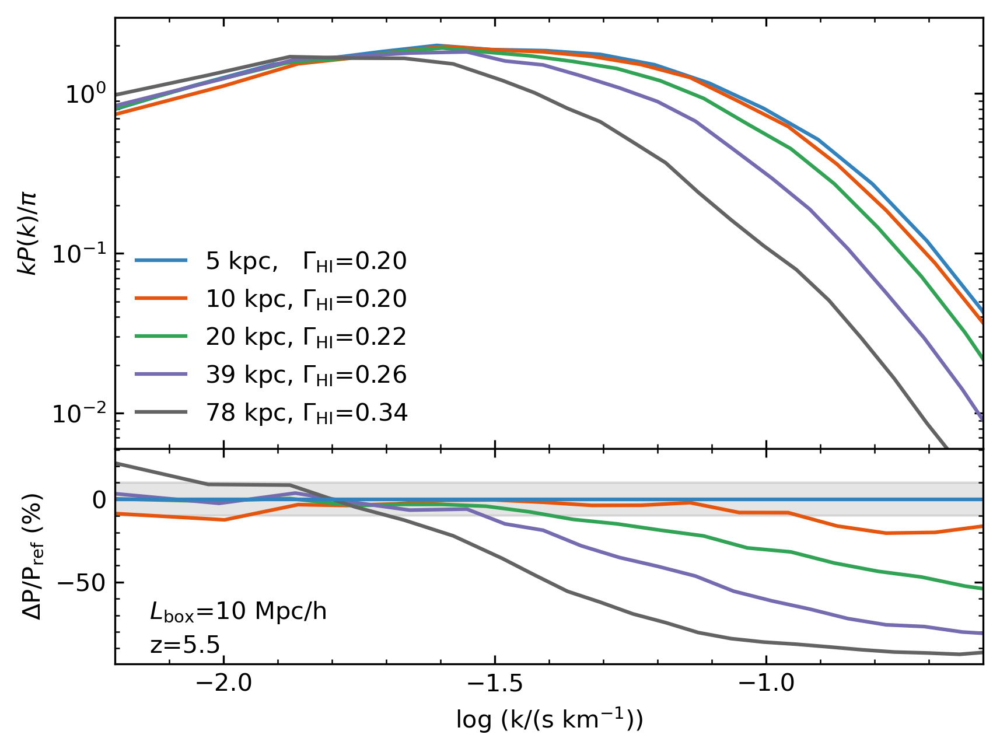
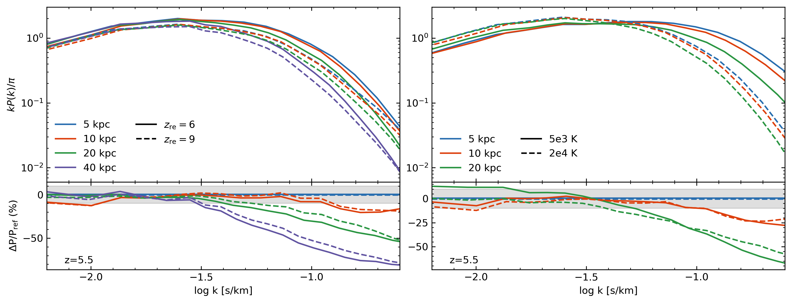
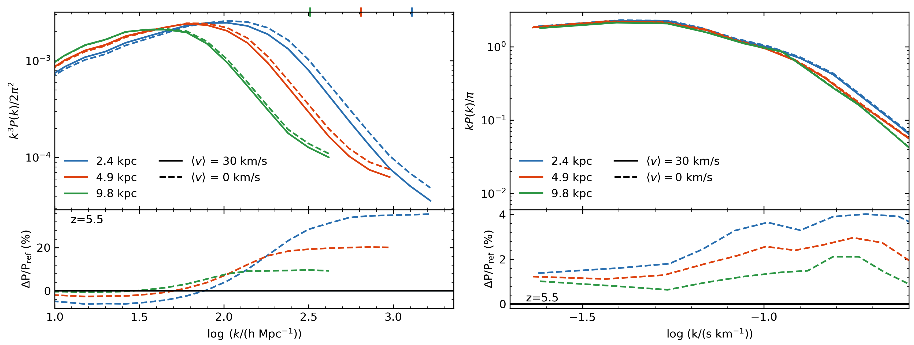

Recently, I've run a suite of fixed gridsize Nyx cosmological hydrodynamic simulations to explore the convergence of the z=5.5 Lyα
forest as a function of resolution and box size, with a focus on how it is affected by the timing of
reionization. In the slices above, you can see how an earlier instantaneous reionization model leads to
an increased scale for pressure smoothing; structures are more smoothed out, and below a certain scale,
small structure is lost completely. Although it is generally assumed that the Lyα forest is converged
at 20 kpc resolution, if reionization occurs late enough, the lack of time for the gas to thermodynamically
respond to heat injection might mean this assumption no longer holds.
In particular, we are focused on very high redshift (z>5) and at
higher wavenumbers, where the forest is not as well converged, but where and when it is perhaps the most useful
for learning about dark matter and reionization.
We find that the Lyα forest power spectrum does not converge within 10 percent until ~10 kpc, and
wavenumbers larger than k>0.1 (s/km) are still not converged within this percentage. The photoionzation
rate ΓHI used to achieve the mean flux (0.05) converges by 10 kpc as well.

The 1D Lyα power spectrum with instantaneous reionization at zre=6,
for simulations with varying fixed grid resolutions. The legend indicates the resolution, and also
the photoionization rate necessary to match the selected mean flux, in units of 1e-12 s-1.
While there is a difference in the rate of convergence for instantaneous reionizations at z=6 and z=9,
they are not major. At 20 kpc and 40 kpc resolution the maximum percent difference
in the residual is 10 percent, while by 10 kpc the maximum is only 5 percent.
Also, while there is extra small scale power in the density field in a later reionization scenario,
this can be completely washed out in the power spectrum by the hotter average temperature.

Caption, left: 1D flux power spectra for zre=6 and zre=9 instantaneous
reionization histories, for several resolutions. The residual panel shows each curve with respect
to 5 kpc resolution. Caption, right: Same, but for unreionized boxes with different temperature floors
applied in post processing.
Side note: We are using ICs from O’Leary & McQuinn (2012), using an average streaming
velocity of 30 km/s (at z~1100), as this velocity could lead to early shock heating that eliminates small
structure. By z=5.5 we find that this only affects the power by <5 percent at most compared to ⟨v⟩=0 km/s.
However, the choice of ICs can significantly impact the power, even if the choice of streaming velocity
does not. The difference increases with higher resolution.

Caption, left: The 3D gas density power for two streaming velocities, for several resolutions.
Caption, right: The 1D flux power for the same simulations as on left.